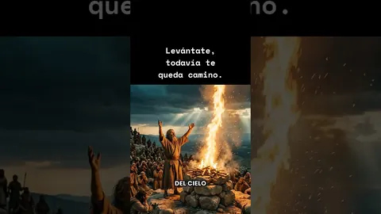
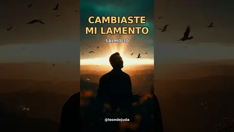
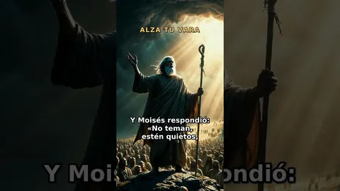
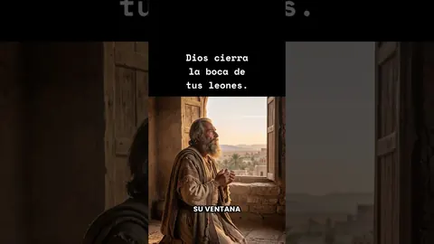
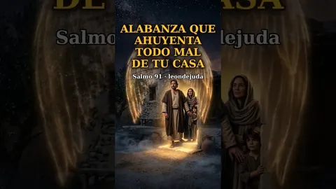
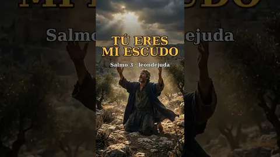
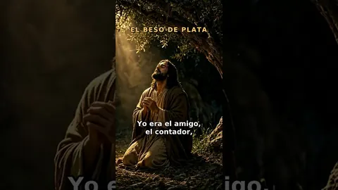
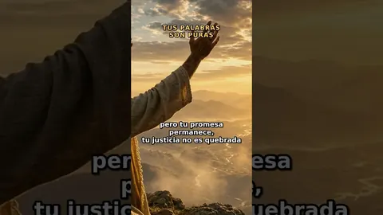

✦ El León de la tribu de Judá ha vencido ✦
León de Judá
Música cristiana y alabanzas en español
«No llores; he aquí que el León de la tribu de Judá, la raíz de David, ha vencido.» Apocalipsis 5:5
Escúchanos en Spotify
Alabanzas, salmos cantados y canciones de adoración para tu tiempo con el Señor.
Vídeos en YouTube
Salmos hechos canción, alabanzas de protección y mensajes bíblicos de fe y esperanza.
-
Alabanzas cristianas
Siente la presencia de Dios: 18 canciones cristianas para adorar
-
Alabanzas cristianas
Alabanzas cristianas para vencer el miedo y la ansiedad
-
Mensajes cristianos
Más allá de la traición: la historia de Judas en canciones
-
Alabanzas cristianas
Alabanza que ahuyenta todo mal de tu casa | Música cristiana
-

Mensajes cristianos · ShortLevántate, todavía te queda camino | Mensaje cristiano
-

Versículos de la Biblia · ShortCambiaste mi lamento – Salmo 30 | Canción cristiana
-

Versículos de la Biblia · ShortAlza tu vara – Éxodo 14 | Dios pelea tus batallas
-

Mensajes cristianos · ShortDios cierra la boca de tus leones | Daniel en el foso
-

Versículos de la Biblia · ShortSalmo 91: oración musical poderosa de protección
-

Versículos de la Biblia · ShortTú eres mi escudo – Salmo 3 | Canción cristiana
-

Mensajes cristianos · ShortEl beso de plata: Judas, ¿por qué besas con veneno?
-

Versículos de la Biblia · ShortTus palabras son puras – Salmo 12 | Canción cristiana
Sobre nosotros
León de Judá es un proyecto de música cristiana en español nacido para exaltar a Jesús, el León de la tribu de Judá. Convertimos salmos y versículos de la Biblia en canciones, y compartimos alabanzas de adoración, protección y esperanza para acompañarte en la oración, en los momentos difíciles y en tu día a día con Dios. Nuestro deseo es que cada canción te recuerde que el Señor pelea por ti y que en Él siempre hay victoria.
Dios te bendiga. ✦